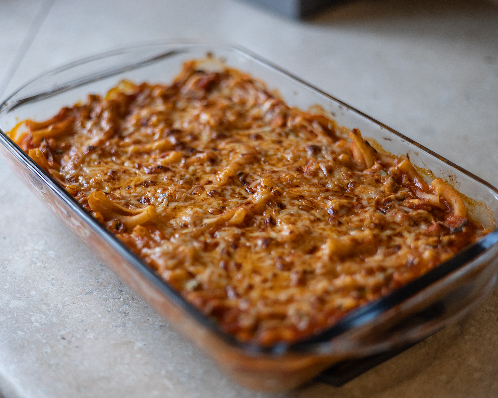
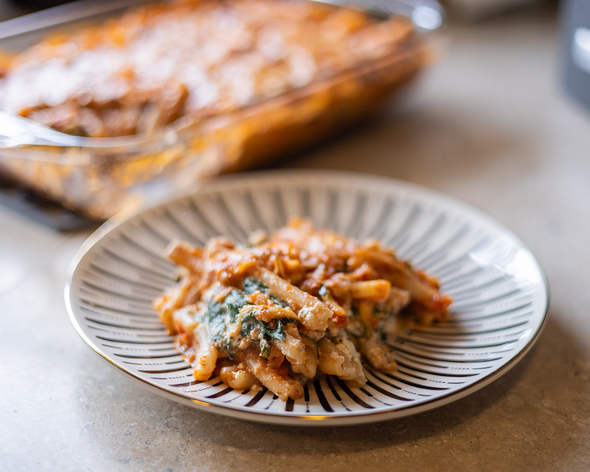

Zucchini Marinara Pasta Bake
Clearly this household has a love for marinara sauce. I get bored of the stardard meat+ marinara combination. This dish features a couple green veggies in places even the pickiest of eaters wouldn't be able to taste them. Plus, who doesn't love ricotta cheese?

Ingredients
- 1 large zucchini
- About 6 oz Baby spinach
- Jar of marinara sauce
- 8 oz ricotta cheese
- 6 oz pasta
- 1/2 cup mozzarella cheese
- 1/4 cup parmesan cheese
- 1 egg yolk
- 1 tsp garlic powder
- 1 tsp dried oregano
- Salt and pepper
Instructions
- Preheat the oven to 400°F and boil the pasta according to package directions.
- In a large pan over medium heat, wilt the spinach. Add the ricotta cheese, parmesan cheese,garlic powder, oregano and a generous amount of salt and pepper. Stir in the egg yolk until fully incorperated. Remove from heat and set aside.
- Grate the zucchini and pat it dry. In another pot, heat the zucchini and add marinara sauce. Once pasta is cooked, drain and add to the sauce mixture.
- In a small baking dish, add half of the pasta and sauce, spread evenly on the bottom. Then layer the ricotta mixture by spooning evenly over the pasta. Finally add the remiaing pasta and top with mozzarella cheese.
- Bake for 20 minutes or until the cheese is bubbly and golden brown. Let cool atleast 5 minutes before serving. Great with a slice of crispy garlic bread.
